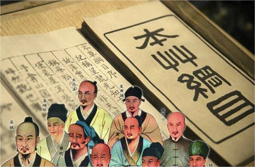

中医历史

自清朝末年，中国受西方列强侵略，国运衰弱。中医学陷入存与废的争论之中。同属中国医学体系的日本医学、韩国的韩医学亦是如此。中医中药在中国古老的大地上已经运用了几千年的历史，经过几千年的临床实践，证实了中国的中医中药无论是在治病上、在防病上，还是在养生上，都是确凿有效可行的。在西医未传入中国之前，我们的祖祖辈辈都用中医中药来治疗疾病，挽救了无数人的生命。中医对疾病的治疗是宏观的、全面的。中医，即相对西医而言。在西方医学没有流入中国以前，中医基本不叫中医这个名字，而是有独特且内涵丰富的称谓。